BigBoss Commerce · Operator Guides
Learn the platform, one flow at a time.
Click-by-click visual walkthroughs of the admin dashboard, captured live from the running app. Each guide traces one business flow end to end — what to click, what the system does underneath, and which journals it books.
Sell — POS, Orders & Growth
5 guidesRing up sales at the register, take online orders through fulfilment, and run the levers that bring customers back.
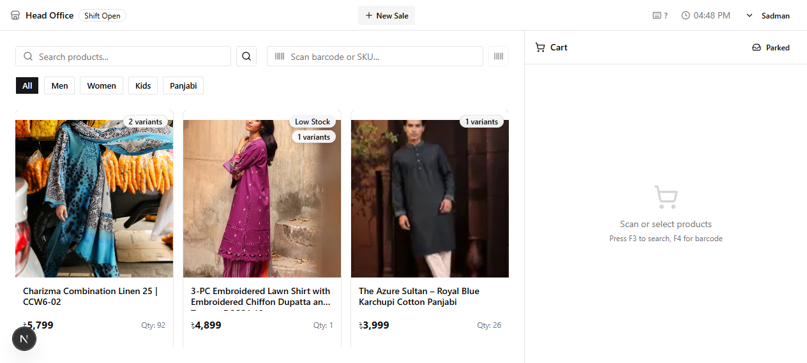
How it works · Scan → Shift → Daily-Z posting
POS Register
POS resolves inventory and the ledger the same way ecom Sales Orders do — with one decisive difference: TIMING. A store rings hundreds of small cash and card sales a day; a journal entry per sale would bury the ledger. So POS decrements stock in real time on every sale, but accumulates the day's money inside a SHIFT and posts ONE aggregated Z-entry at shift close, routed by payment method. Follow a sale from scan to shift-close and see exactly where inventory, revenue and VAT land.
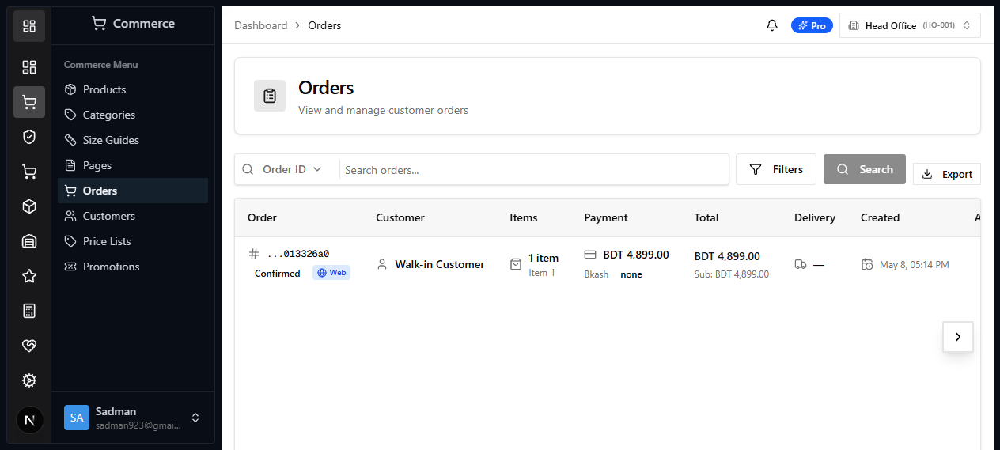
How it works · Order → Inventory-out → Ledger
Sales Orders
The mirror image of procure-to-pay. A sales order is a customer's intent to buy; placing it only RESERVES stock. Fulfilment is the resolution — it moves inventory OUT, consumes cost layers into COGS, and books revenue, output VAT, and a receivable in one stroke. Follow an order from placed to delivered and watch six ledger effects fall out of a single fulfil action.
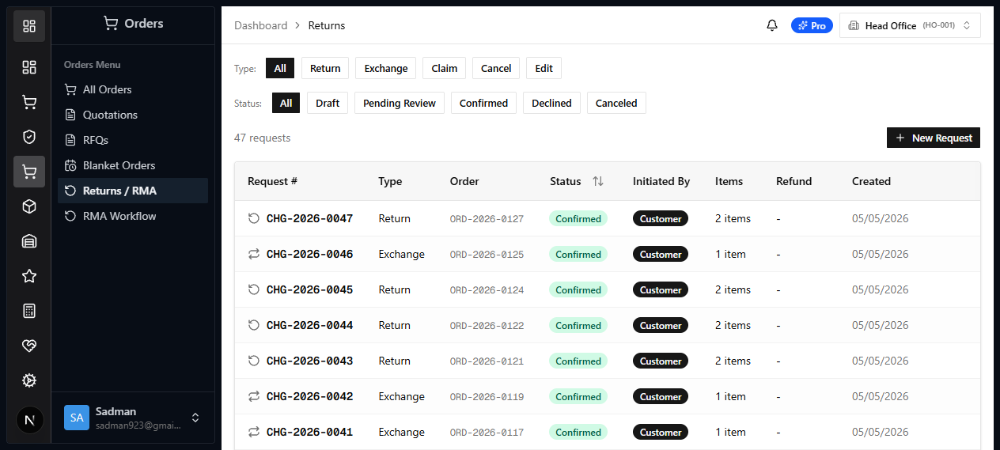
How it works · Confirm → Goods + Ledger + Money
Returns & RMA
A return is the sale run backwards — but it is not one reversal, it is three. When an admin confirms an RMA, a single event (order:change.confirmed) fans out to three independent handlers: goods move back, the ledger reverses, and money is refunded. The pivot is the per-line DISPOSITION: whether each returned unit re-enters the balance sheet as a sellable asset or leaves it as a loss. Follow one confirmation and watch all three resolutions fall out of that one field.
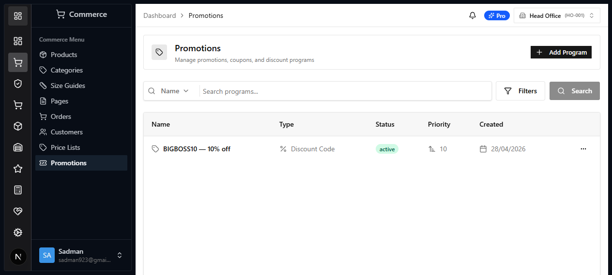
How it works · Program → Server eval → Discount → Voucher commit
Promotions & Coupons
A coupon is a promise the SERVER must be able to police. This guide follows a promotion from its rule definition to the moment it discounts a real order — and shows why the math is never trusted to the client. The promo engine evaluates the code against the canonical, server-resolved cart, promotes the result onto the order's totals.discount, and commits the voucher only when the order actually lands. It is the same reserve → commit → rollback lifecycle that manual discounts and loyalty redemption ride — one discount pipeline, three sources.
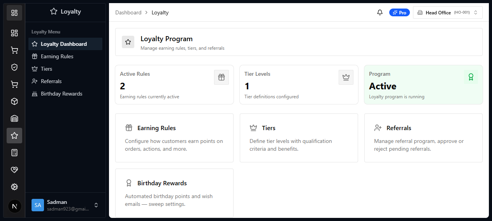
How it works · Earn → Tiers → Redeem
Loyalty
Loyalty is a two-way ledger of trust: customers EARN points on what they buy and REDEEM them for discounts — and both sides resolve into the same order pipeline and the same books. Follow a point from the rule that mints it, through the tier it qualifies, to the till where it's redeemed — where the SERVER (never the client) reserves the points, turns them into a discount, and confirms the spend only when the sale actually lands. Every number here was captured from a real redemption.
Buy — Purchasing & Suppliers
3 guidesProcure-to-pay: raise POs, receive goods, book expense bills, and reconcile the supplier subsidiary ledger.
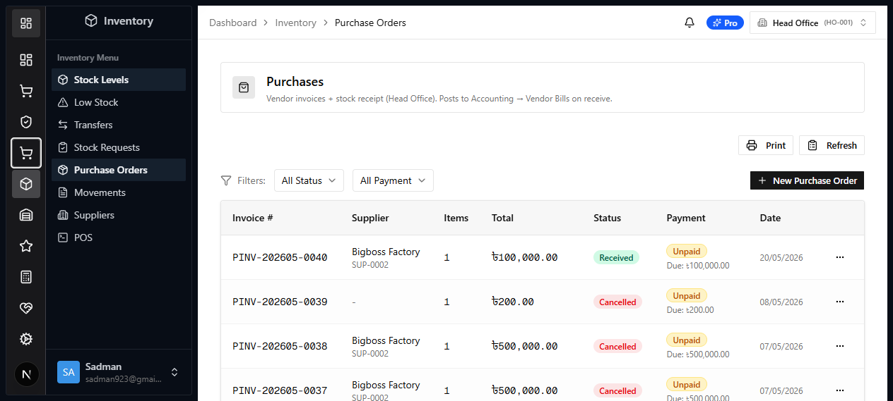
How it works · Purchasing → Inventory → Ledger
Procure-to-Pay
A purchase order is not a status field — it is the trigger for two independent resolutions that must stay in lockstep. This guide follows one PO end to end and shows what actually happens underneath: how receiving resolves into INVENTORY (a Flow move, a quant increment, a cost layer) AND into the LEDGER (a GR/IR accrual), and how posting the bill clears that accrual into Accounts Payable. Understand this once and every downstream report — stock valuation, GR/IR, A/P aging — makes sense.
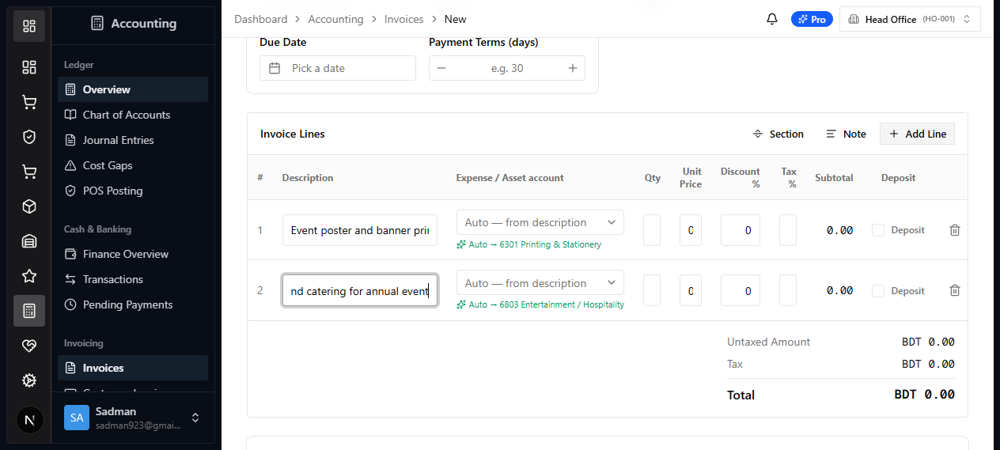
Accounting · Purchasing
Expense & Non-Inventory Purchases
Not every purchase is stock. Event printing, a booked hall, legal fees, office utensils — these never touch inventory; they hit an expense (or asset) account and Accounts Payable. The catch: the person entering the bill is rarely an accountant and shouldn't have to know that "posters" means GL 6301. So the system derives the account from the plain description — a rule engine, not a lookup table — books it correctly, and routes big spends through an approval chain. Follow a real expense bill from a typed sentence to a balanced journal entry, and see where inventory is deliberately NOT involved. Every number here was captured from the live ledger.
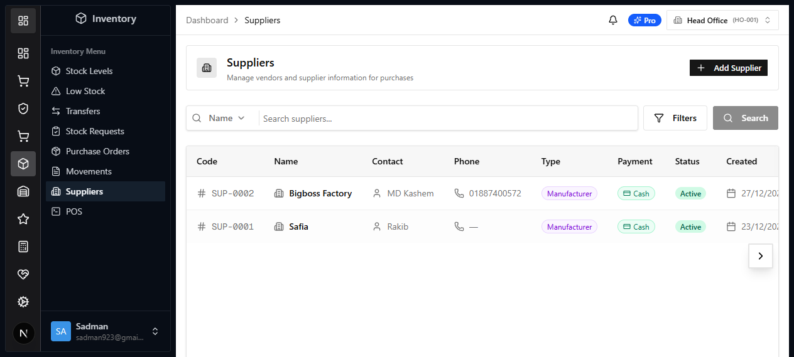
How it works · Master → A/P subsidiary ledger → Payment
Suppliers
A supplier is the one purchasing record that is NOT per-branch. Stock is isolated by branch, but WHO you buy from is shared company-wide — one master record every branch raises purchase orders against. That record is also a PARTNER in the accounting subsidiary ledger: every branch's unpaid bill to a vendor threads back to it, aggregating into a single A/P aging that must reconcile to the control account. Follow a supplier from master record to the payment that clears its aging.
Stock — Inventory & Warehouse
6 guidesPer-branch stock control, warehouse operations, inter-branch transfers, cycle counts, and how cost flows into COGS.
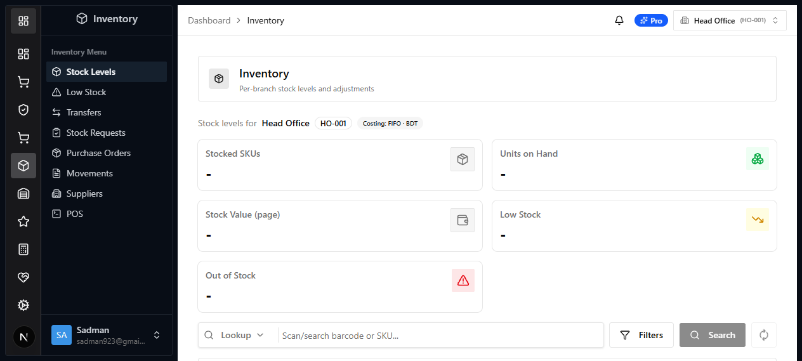
Inventory · WMS
Inventory & Stock Control
Track stock per branch, catch what is running low, move goods between branches on a challan, replenish from suppliers, and audit every movement — the day-to-day inventory loop in five screens.
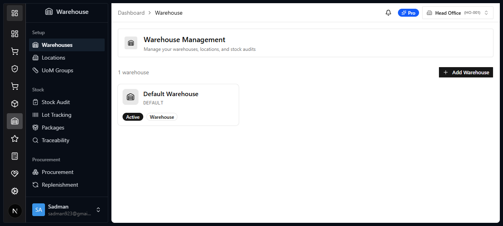
Warehouse · WMS
Warehouse Management
The full warehouse lifecycle end to end — model the site, receive goods, let reorder rules replenish, batch picks into waves, count stock, and publish a standard cost. Six screens, one continuous flow.

How it works · Purchase → Warehouse → Catalog
Warehouse Loading & Catalog Link
The procure-to-pay guide showed WHAT a receipt posts to the ledger. This one shows WHERE the goods physically land and how they become sellable. Follow the received stock as it loads into a warehouse location, becomes an on-hand quant, and links back — by SKU — to a catalog product whose storefront buy-button reflects it automatically. This is the join between purchasing, the WMS, and the catalog.
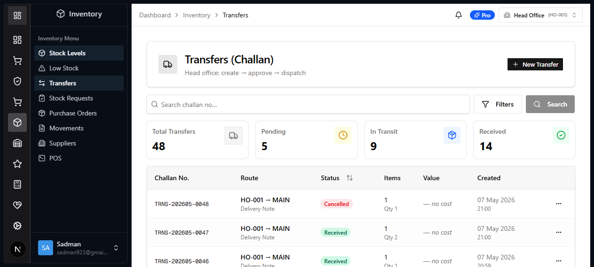
How it works · Dispatch → Transit → Receive
Inter-branch Transfers
A transfer is the only operation that touches TWO branches at once — and it exposes the whole architecture. Because Flow is per-branch isolated (organizationId = branchId), moving stock needs DUAL contexts: one to decrement the sender, another to increment the receiver. And because accounting is a SINGLE company ledger with branch as a dimension, the same movement posts a PAIR of journal entries bridged by an in-transit clearing account — company inventory never changes, only the branch tag does. Follow one challan from dispatch to receive.
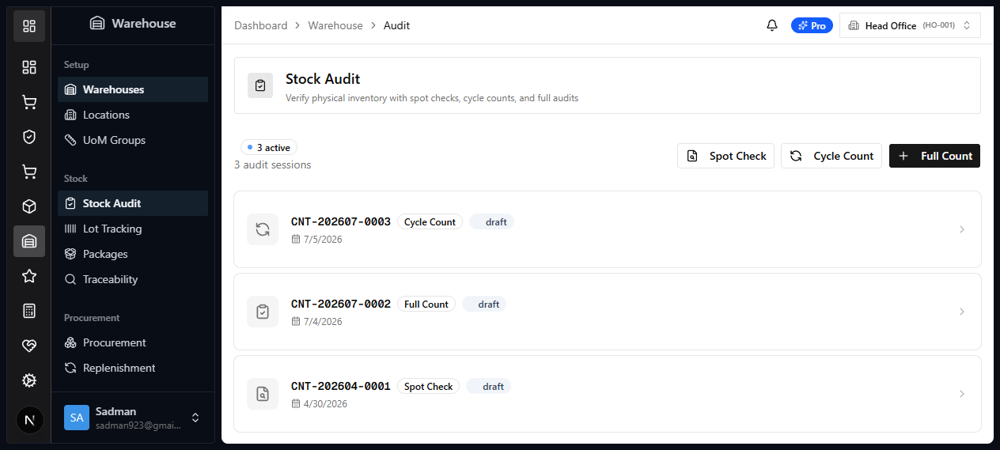
How it works · Count → Variance → Draft JE
Stock Adjustments & Cycle Count
Procurement adds stock, sales remove it, transfers move it — yet the physical shelf still drifts from the system through theft, breakage and miscounts. Stock Audit is the CORRECTION leg that closes that gap. It reconciles counted-against-system, and every variance resolves into a Flow move to the adjustment location AND a journal entry. But uniquely, that JE lands as a DRAFT — because writing inventory value off the balance sheet is a decision a human must approve, not an automatic post.
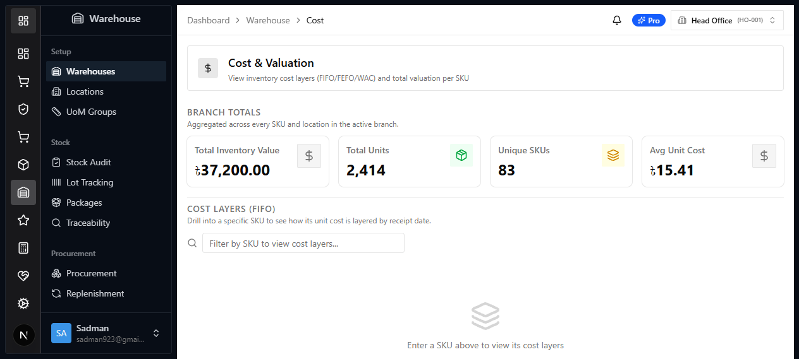
How it works · Layers → Method → COGS
Cost & Valuation
Every other guide in this suite says the same three words — 'consumes cost layers'. This is the guide that explains them. Inventory value on your balance sheet is not a number anyone types in; it is the live SUM of cost layers, each opened by a receipt at the price you actually paid. When you sell, transfer or write off, a layer drains — and the price frozen in that layer becomes your COGS. Understand the layer and you understand where every margin number in the system comes from.
Books — Accounting & Tax
4 guidesThe single company-wide ledger: chart of accounts, receivables/payables aging, VAT + withholding, and closing the period.
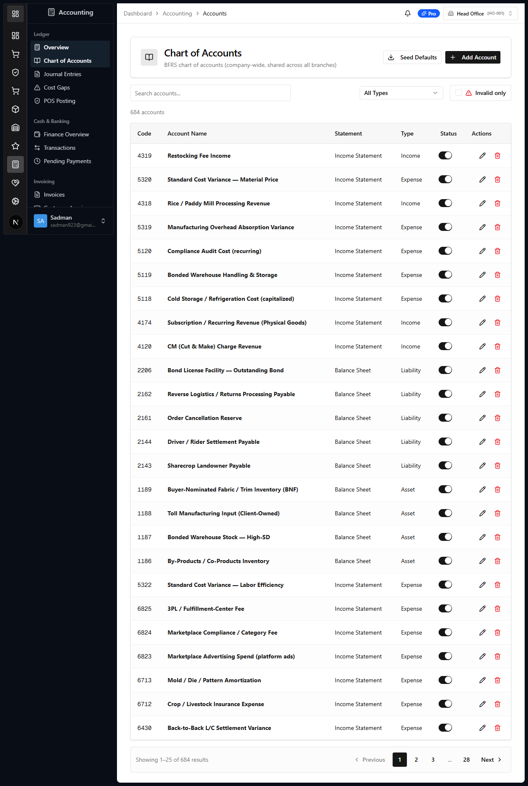
Accounting · Ledger
Chart of Accounts
The company-wide ledger that every branch posts against. Open it, find any account, seed the standard BFRS chart, and link a new account — all from one screen.
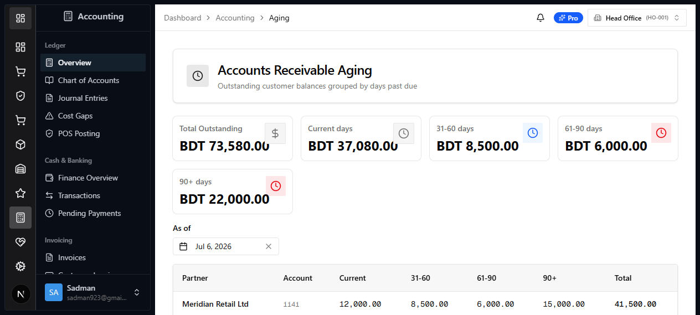
Accounting · Receivables & Payables
A/R & A/P Aging
Aging answers one question a business lives or dies by: who owes us, how much, and how late. But the report is only the surface. Underneath, every open item is a single line on ONE control account (A/R 1141 for customers, A/P 2111 for suppliers), tagged at posting time with the partner it belongs to and the date it falls due. Follow a real invoice from the moment it posts — where the control line is stamped with a partnerId and a maturityDate — through the bucket it lands in, the per-partner sub-ledger it rolls up into, the control account it reconciles against to the paisa, and the payment that finally clears it. Every number here was captured live from the running ledger.
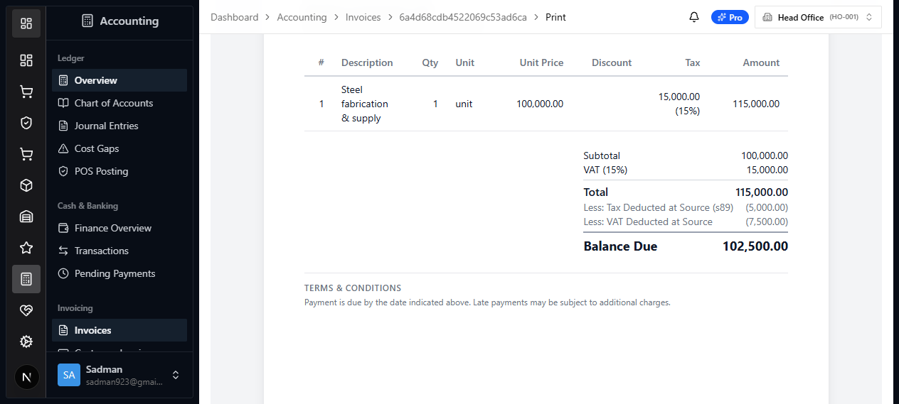
Accounting · Tax
Invoice Tax & Withholding
One vendor bill, followed from a typed line to a balanced journal entry — through the part most ERPs get wrong. Bangladesh tax is not one number: a bill carries VAT (and Supplementary Duty) that must each post to their OWN ledger head, because the NBR reads them off separate Mushak grids. And the buyer must DEDUCT tax at source — TDS on the base value, VDS on the VAT — pay the supplier the remainder, and remit the withheld slice to the NBR. Get any of it wrong and the books lie: the document subledger disagrees with the general ledger, or you claim an input credit you may not. This guide traces a real ৳100,000 contractor bill (BILL-2026-00017) where the operator types nothing about tax accounts and nothing about withholding — the supplier's profile and the country tax pack do it all — and lands on Balance Due ৳102,500. Every number here was captured from the live ledger.
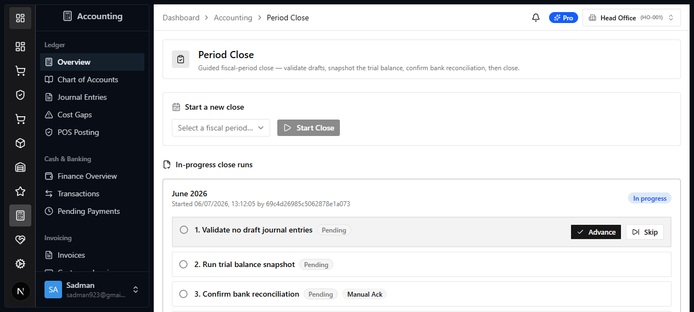
How it works · Gates → Trial Balance → Lock
Period Close & Trial Balance
Every guide in this suite ended with a journal entry. This is where they all come due. Month-end close is the control that verifies each resolution actually landed — no draft left unposted, no clearing account left dangling, no sale left uncosted, no shift left open — and then LOCKS the period so the numbers can never silently change afterwards. The close wizard is a fixed checklist of gates, and each gate is one of the modules you have already followed. It is the capstone that proves the whole system reconciles.